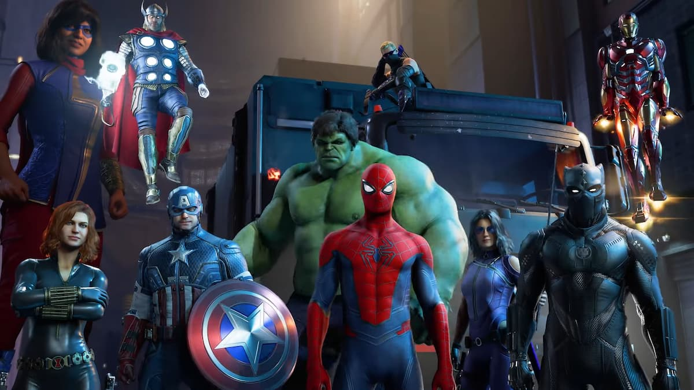

About Spider-Man
Peter Parker got bitten by a radioactive spider which gifted him the powers of a spider including wall-climbing, super strength and his spider-sense
Spider-Man with The Avengers
Spider-Man Characteristics
- Your friendly neighbourhood superhero
- A jokester even when fighting villains
- Willing to do anything to keep people safe
Spider-Man's Allies
Spider-Man has close friends, lovers and allies. Some are superheroes like him, some are just normal people and some even turned into villains. Links below to know more about them.